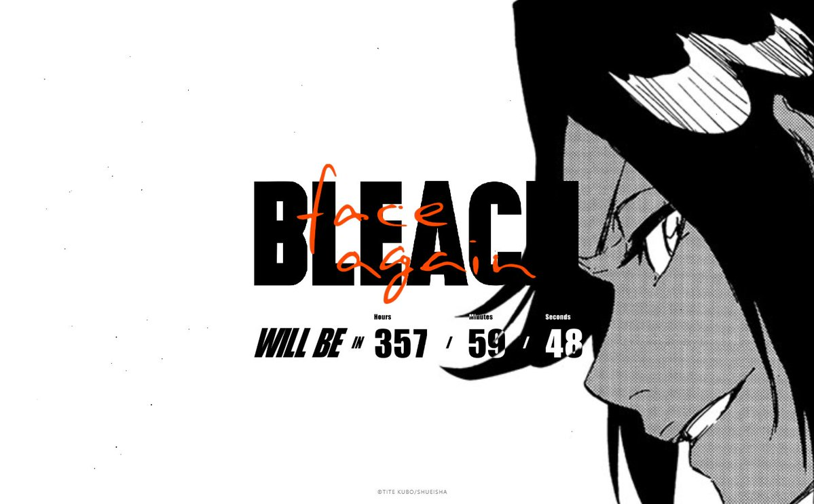

La web teaser del evento «Bleach 20th Anniversary Project & Tite Kubo New Work Presentation» cuenta con una cuenta atrás de 366 horas (número de episodios animados del anime de Bleach) y que finalizará el próximo sábado 21 de marzo a las 9:25 hora japonesa (1:45 hora española). El evento, con el título de Bleach face again, se podrá seguir en directo vía streaming y en él que se presentará el nuevo trabajo del creador de Bleach, Tite Kubo, así como información sobre el 20 aniversario del manga.

Originalmente el evento de Bleach face again entraba dentro del marco de la feria del AnimeJapan 2020, pero tras su cancelación por la pandemia del virus COVID-19, se realizará finalmente de manera online. En dicha presentación se espera la presencia de Hiroyuki Nakano, director jefe de la redacción de la revista Weekly Shônen Jump de Shueisha, de los actores de voz Masakazu Morita (Ichigo Kurosaki en el anime de Bleach) y Ryotaro Okiayu (Byakuya Kuchiki en el anime de Bleach) y del dúo cómico America Zarigani.
El título de este evento lo proporciona el manga de Bleach, el cual finalizó en agosto de 2016. Desde entonces, Tite Kubo solo ha publicado el one-shot Burn the Witch en la revista Weekly Shônen Jump, por la celebración de su 50 aniversario. Además ha colaborado con Sega para el diseño de personajes de la última entrega de la franquicia Sakura Wars. También aporto los diseños para la adaptación al manga del videojuego, Shin Sakura Taisen the Comic, editado por la revista Young Jump de Shueisha.
El manga de Bleach fue publicado en Japón entre los años 2001 y 2016. Todo el manga fue recopilado en 74 volúmenes. La versión animada se emitió en la televisión japonesa entre los años 2004 y 2012 contando con 366 capítulos y cuatro películas animadas. Studio Pierrot fue el estudio de animación encargado de hacer la transición al anime. Recientemente pudimos disfrutar de una adaptación live action de la serie de la mano de Warner Bros Japan y distribuida internacionalmente por Netflix. En España Panini Cómics ha editado los 74 tomos existentes en Japón. Actualmente, la editorial ha re-editado el manga en una edición Maximum con 12 tomos publicados. Los primeros episodios del anime del Bleach fueron editados en DVD por Jonu Media.
Ichigo Kurosaki no es un quinceañero normal y corriente… puede ver espíritus y tiene un contacto innato con el más allá, al que sacará provecho tras conocer a un shinigami (ángel de la muerte) que le proporciona una espada a juego con sus habilidades.